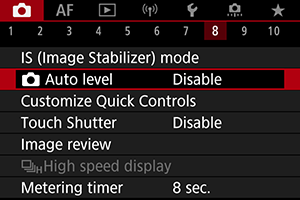
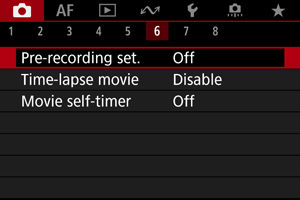
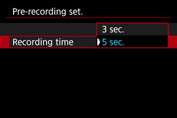
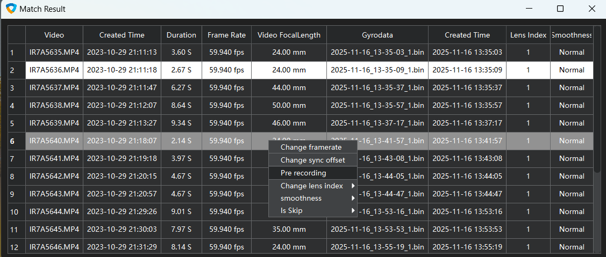
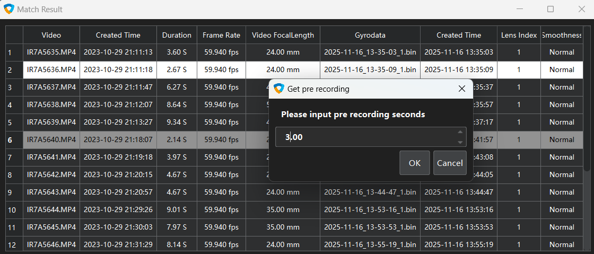

Panasonic Cameras
1
Turn off Image Stabilization

Find "Image Stabilizer" in the menu and turn it off
If there are switches on the lens, turn them off as well
Find "Image Stabilizer Mode" and "Digital IS" in the menu and turn them off
If there are switches on the lens, turn them off as well
Find "Auto Level" in the shooting menu and turn it off
If pre-recording is enabled, set the pre-recording time in the matching list
 Set the pre-recording time in the matching list, or it's recommended to turn it off entirely
 Find "Vibration Reduction" and "Electronic VR" in the menu and turn them off
If there are switches on the lens, turn them off as well
2. Turn on Auto Distortion Control (default is on)Find the "SteadyShot" function in the shooting settings and set it to Off
Find "Image Stabilizer" in the menu and turn it off
If there are switches on the lens, turn them off as well
Find "Image Stabilization Mode" in the menu and turn it off
If there are switches on the lens, turn them off as well